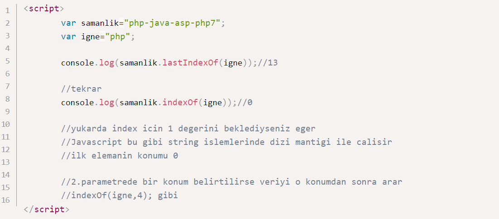
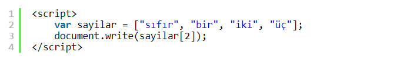

JAVASCRİPT STRİNGLER
-JavaScript String Veri Türü
Bir JavaScript string, basitçe bir grup karakteri saklamaya yarar. "Ali", "Ali Veli", "Bu bir web sitesidir", "sezon11" birer string örnekleridir.
Bir string türündeki bir değişkene değer atarken string ifade tırnak içinde yazılmalıdır.
Bu tırnak işareti tek veya çift olabilir.
Bir string değişkene değer atarken, metnin içinde tek tırnak veya çift tırnak olmadığı müddetçe istediğiniz uzunlukta veri girebilirsiniz.
Eğer metin içinde string yapısını bozacak tek tırnak veya çift tırnak varsa buna özel önlem almanız gerekir.
Bir metinde string yapısını bozacak tek tırnak veya çift tırnak varsa o zaman JavaScript kaçış işaretini kullanmalısınız.
Kaçış işareti \ işaretidir.
-String Length (Stringin uzunluğu)
String yerleşik olarak bazı özelliklere sahiptir. ' length 'bunlardan biridir ve stringin uzunluğunu verir.
-Özel Karakterler
Yukarıda bahsedildiği gibi bir stringe atadığınız değer içinde " veya ' gibi özel karakterler varsa bu JavaScript tarafından yanlış anlaşılabilir.
Bildiğiniz gibi JavaScript'de " ve ' karakterleri string değişkene veri atarken kullanılan karakterlerdir.
Bu tür bir sorun ile karşılaşmamak için eğer metnin içinde " veya ' karakterleri varsa başına \ karakteri koyarak bunun metnin bir parçası olduğunu JavaScript'e bildiririz
\ karakteri JavaScript'te Kaçış Karakteri olarak adlandırılır.
\ kaçış karakteri
Metinde tek tırnak varsa: \' Metinde çift tırnak varsa \" Metinde ters eğik çizgi varsa \\
şeklinde kullanılabilir.
JAVASCRİPT STRİNG METODLARI
1. String'in uzunlugu 2. String icinde veri arama 3. String icinden istedigmiz veriyi alma 4. ...
-Javascript String.length
String verinin uzunlugunu dondurur.
-Javascript String.indexOf
Oldukca kullanisli bir metot,bir string icinde baska bir string deger aramaya yarar,bulursa konumun index numarasini dondurur,bulamazsa -1 doner.
-Javascript String.lastIndexOf
String icinde aranan verinin son komumun döndurur,bulamazsa -1 döner.
Asagida dersin devaminda diger onemli metotlardan bahsettik fakat konunun sonuna birakmadan burda kendimizde Stringler icin bir metot olusturalim.
Evet String metotlarinin kullanim bicimini ogrendigimize gore diger onemli metotlari tablo halinde vermek daha yararli olacaktir.(Asagida bazi yerlerde parametre olarak "düzenli ifade" olabilir vs. diyoruz burda sadece bilginiz olsun düzenli ifadeleri ayri bir ders olarak göreceğiz)
-charAt
"Javascript".charAt(1)
sonuc='a';Belirtilen indexteki karakteri getirir
-charCodeAt
"Javascript".charCodeAt(1)
sonuc='97';Belirtilen indexteki karakterin unicode degerini getirir.
-trim
String verinin basindaki ve sonundaki bosluklari siler
-split
String veriyi belirli bir kritelere gore diziye cevirebilirsiniz
-search
"Javascript".search("pt")
sonuc=8;indexOf gibi calisir bulamazsa -1 doner,fakat indexOf'a gore daha gelismis diyebiliriz cunku duzenli ifadeye gorede arama yapabilir.
-slice
"Javascript".slice(4,10)
sonuc='script';String veriyi belirtilen konumlardan keser ve sonucu getirir.2.parametre verilmezse sona kadar kesme islemi yapar
"Javascript".slice(4);sonuc='script'
Asagidaki gibi negatif degerler kullanirsak bu defa kesme sondan islem yapar
"Javascript".slice(-10,-6); sonuc='Java'
-substring
"Javascript".substring(1,5)
sonuc='avas'; slice gibi calisiyor farki negatif deger almiyor
-substr
"Javascript".substr(1,3)
sonuc='"www.birbyte.net Android Dersleri'
1.parametredeki veriyi bulursa 2.parametredeki degerle degistirir
Fakat tum eslesmeleri degil sadece ilk buldugu degeri degistirir,birden fazla eslesme varsa degismez.
-replace
sonuc='"www.birbyte.net Android Dersleri'
1.parametredeki veriyi bulursa 2.parametredeki degerle degistirir
Fakat tum eslesmeleri degil sadece ilk buldugu degeri degistirir,birden fazla eslesme varsa degismez.
replace parametre olarak düzenli ifade de kabul ettiği için asagidaki gibi bir kodla tum eslesmeleri degistirebiliriz.
-toLowerCase
"Javascript".toLowerCase()
sonuc='javascript'; String veriyi kucuk karakterlere cevirir.
-concat
"Javascript".toLowerCase()
sonuc='javascript'; iki yada daha cok string veriyi birlestirir.
1) Sayılar
Bu derse sayilara birazdaha yakindan bakacagiz,gerekli aciklamalari ornek uzerinde bulabilirsiniz.
Simdide sayilar uzerinde islemlere goz atalim .

Javascript ile calisirken virgullü sayilar ve 16-17(yada daha buyuk) haneli tamsayilarla calisirken yanlis sonuclar alabilirsiniz. Bu nedenle dersin sonlarina dogru isSafeInteger () yonteminden bahsedecegiz.
10 tabanindaki sayilari 2,8 ve 16 tabaninda yazalim
-parseInt() ve parseFloat()
String olarak aldigniz verileri ayristirirken basvurabiliriz,ornegi inceleyelim.
-isInteger()
Verilen deger tamsayi ise true doner.
- isSafeInteger()
Verilen degerin guvenli aralikta olup olmadigi kontrolunu yapar.
- prototype
Yukarda ogrendigmiz yontemlere benzer bir yontemi prototype kullanarak olusturalim amacimiz verilen degerin karesini donduren bir yontem hazirlamak olsun.

2) Diziler ve Dizi İşlemleri
Değişkenlerdeki her bir veriye eleman denir. Dizi elemanları indeks değerleri ile çağrılırlar. İndeks bir elemanın dizi içinde nerede yer aldığını gösterir.
İndeksler bir çok programlama dilinde olduğu gibi 0'dan başlar. 0'dan başlamasının sebebi programlama dillerinin tamamen insan mantığı oluşturulmuş olduğunun göstergesidir.
Dizide eleman tanımlamak için kullanılan üç yöntem vardır.
Sayilar adında 4 elemanlı bir dizi oluşturduk.
Çıktımız ise bu şekilde olacaktır.
Bu da ikinci yöntemdir. Dizi elemanlarını köşeli parantezler ([ ]) içerisine yazıyoruz.
Çıktımız ise aynı şekilde olacaktır.
Son yöntemimizde ise sayilar adında boş bir dizi oluşturduk ve elemanlarını tek tek girdik.
Bu çıktımız da aynı olacaktır.
-length özelliği:
Bir dizinin eleman sayısını dilimizde uzunluk anlamına gelen length özelliği ile sorgulayabiliriz.
Bunun için dizi adindan sonra .length komutunu çalıştırmamız yeterlidir.
Çıktımız ise bu şekilde olacaktır. : 4
İstenilen eleman değerine ulaşmak için indeks değerini sorgulamak yeterlidir.
Çıktımız ise ikinci indeks değerini verecektir. : iki
-Dizi Elemanlarını Değiştirme
JavaScript'te dizi elemanları oldukça kolay bir şekilde değiştirilebililr.
Örneğin sayilar dizisindeki "iki" elemanını "iikii" olarak değiştirdik. Bunun için değiştirmek istediğimiz elemanın indeks değerini yazdıktan sonra yeni değeri atamamız yeterlidir.
-Diziye Yeni Eleman Ekleme
JavaScript'te diziye yeni eleman eklemek de oldukça kolaydır.
push( ) metodu: push dilimizde ittirmek anlamına gelmektedir. JavaScript'te dizinin sonuna eleman eklemek için kullanılır.

Bu şekilde iki yeni eleman daha eklemiş olduk. Çıktımız ise şu şekilde oldu : sıfır,bir,iki,üç,dört,beş
unshift( ) metodu:Bu method JavaScript'te dizinin başına eleman eklemek için kullanılır.
Negatif ifadeli sayılarımızı dizinin başına ekledik.
Çıktımız ise bu şekilde olacaktır. : eksi üç,eksi iki,eksi bir,sıfır,bir,iki,üç
-Diziden Eleman Silme
splice( ) metodu : splice dilimizde iki ucu birbirine birleştirmek gibi bir anlama gelmektedir. JavaScript'te ise belirtilen index değerinden sonra silinecek eleman ya da elemanlar için kullanılır. splice metodunda replace'de olduğu iki parametre vardır. İlk parametre silinecek indeks konumunu, ikinci parametre ise indeksten sonra kaç adet elemanın silineceğini belirtir.
. Burada şunu yaptık: Negatif değerli sayıları ekledik ve daha sonra bu sayıları diziden çıkardık.
Çıktımız ise bu şekilde olacaktır. : sıfır,bir,iki,üç
pop( ) ve shift( ) metodları: pop metodu dizinin son elemanını, shift metodu ise dizinin ilk elemanını silmeye yarar.
sayilar dizimizin ilk ve son elemanları olan sıfır ve üç elemanlarını sildik.
Çıktımız bu şekilde olacaktır. : bir,iki
delete operatörü: Bu operatör ilgili elemanı listeden çıkartır ve yerine tanımsız bir eleman atar. Diğer bir ifade ile ilgili indekse ait elemanı tanımsız yapar.
1 numaralı indeksi sildik. Fakat kaldırmadık. Yerine tanımsız bir değişken atandı. Bir alt satırdaki dizi boyutundan bunu anlayabilirsiniz.
Çıktımız ise bu şekilde olacaktır. :
-Diziden Eşzamanlı olarak Eleman Silme ve Ekleme
Yine splice( ) fonksiyonunu kullanıyoruz. Fakat bu sefer iki parametreden sonra sildiğimiz elemanların yerine gelecek elemanları yazıyoruz. splice( )'ı tam olarak anladıysanız bu işlem oldukça kolay gelecektir.
Bu sefer negatif ifadeleri sayıları sildik ve yerine "zinzin", "zomzom", "zumzum" değerlerini yazdırdık.
Çıktımız ise bu şekilde olacaktır. :
-Dizilerin Birleştirilmesi
concat( ) metodu:Birden fazla diziyi birleştirmek için kullanılır.
Burada sayilar ve cinler adında iki dizimiz var. sayilar_ve_cinler adında yeni bir dizi tanımlıyoruz ve iki dizimizi birleştiriyoruz.
Çıktımız ise bu şekilde olacaktır. : sıfır,bir,iki,üç,zinzin,zomzom,zepzep
-Elemanların Sıralanması
sort( ) metodu: Dizi elemanlarını küçükten büyüğe göre sıralamak için kullanılır.
Örneğimizde sort( ) metodu ile elemanlarımızı alfabetik sıraya göre sıraladık. Önemle belirteyim ki, elemanların indeks konumları da değişecektir.
Çıktımız ise bu şekilde olacaktır. : bir,iki,sıfır,üç
reverse( ) metodu:Dizi elemanlarını tersten sıralamak için kullanılır.
Örneğimizde reverse( ) metodu ile elemanlarımızı tersten sıraladık.
Çıktımız ise bu şekilde olacaktır. : üç,iki,bir,sıfır
-Dizide Değişken Aramak
indexof( ) metodu: Diyelim ki bir dizide çok fazla elemanımız var bir elemanı arıyoruz; fakat nerede olduğunu bulamıyoruz. Bunun için indexof( ) fonsiyonunu kullanıyoruz. Bu metod aranan elemanın indeks konumunu verir.
Örneğimizde "iki" adlı elemanın nerede olduğunu sorgulattık.
Çıktımız ise bu şekilde indeks numarasını verecektir. : 2
-Elemanların Dönüşümü ve Metinsel İşlemler
Dönüşümü öğrenmeden önce bir dizi içerisindeki elemanların hangi veri türü olduğunu öğrenelim.
typeof ( ) metodu: Bu metod bir değişkenin ne tür bir veri türü olduğu hakkında bilgi verir.
Örneğimizde indeks değeri 4 olan "1" adlı elemanın ne tür bir veri olduğunu sorguladık.
"1" elemanının number veri türünde olduğunu öğrendik. : number
toString( ) metodu: Dizi içindeki tüm elemanları string veri türüne çevirir.
Burada sayilar dizisindeki tüm elemanları string türüne çevirdik (convert ettik).
Dördüncü eleman olan "1"in ne tür olduğunu sorduğumuzda ise string yanıtını aldık. : string
join( ) metodu: Normalde çıktımızı yazdırırken elemanlar arasına varsayılan olarak virgül konulur. join ile dizi içindeki elemanların sıralama görünümünü değiştirebiliriz.
Elemanlar arasına - (tire) işaretinin konulmasını istedim.
Çıktımız ise bu şekilde olacaktır. : sıfır-bir-iki-üç